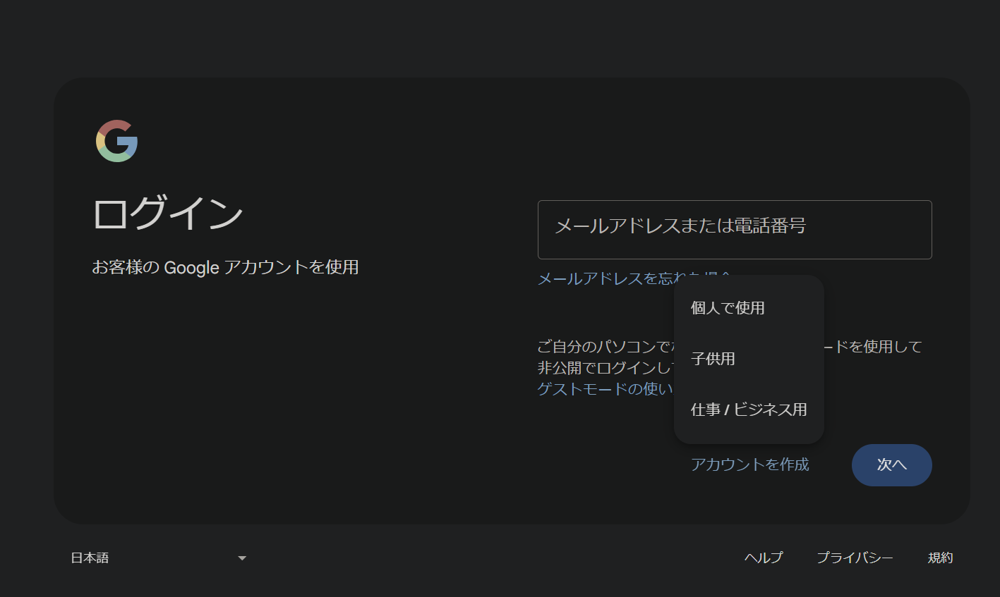
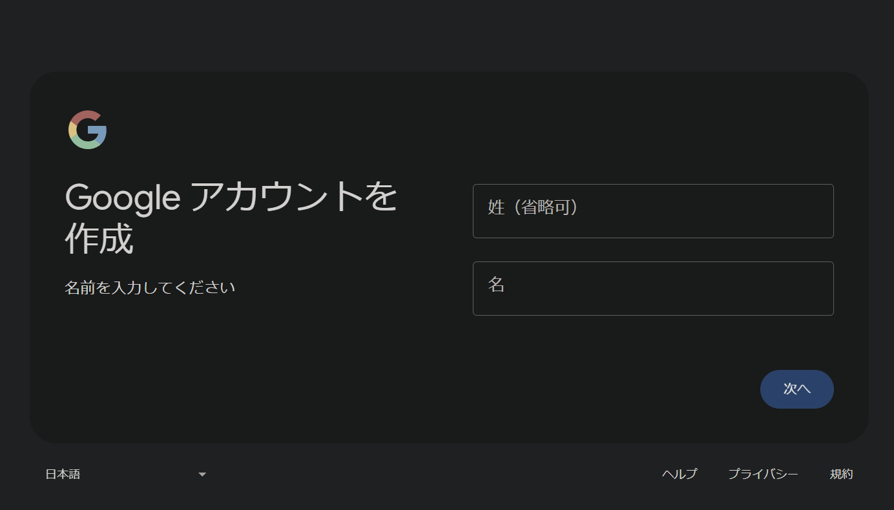
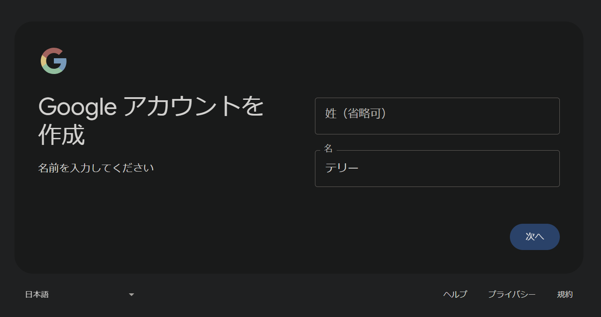

ぐーぐる の あかうんと を つくる
-
だいたい の ながれ
-
ちゅういてん
-
「アカウントを作成」をタップした後、Googleアカウントの作成画面が表示。
現在の場合：
「アカウントを作成」をタップした後、
・個人で使用・子供用・仕事/ビジネス用
が表示される。
↓
「個人で使用」を選択。

↓
姓・名の入力等をする。
姓・名の入力は、本名でなくてOK
＊生年月日は本物入力した方がアカウント復旧等の万一事態で助かる

↓

-
「アカウントを作成」をタップした後、Googleアカウントの作成画面が表示。
- 作成したアカウントは、念のため、2要素認証などでセキュリティ強化しておいた方がよい。